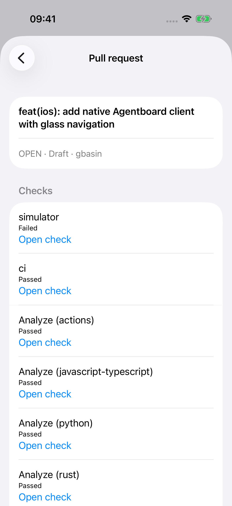

Native validation follow-up
Actual m5p iPhone Simulator captures, November 8, 2026. Media counts stay intact, with a compact total when needed. PDF content loads through the real private backend into iOS Quick Look. Fixtures are synthetic.
Live GitHub checks
Read-only native view of PR #530 through the authenticated backend. Statuses are from the capture time; the native check shown is the prior failed run.
